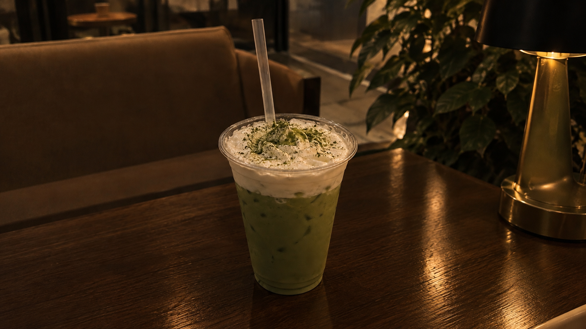
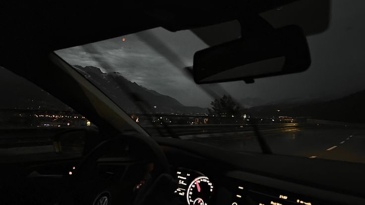
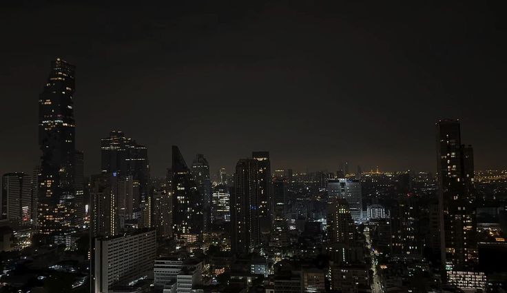
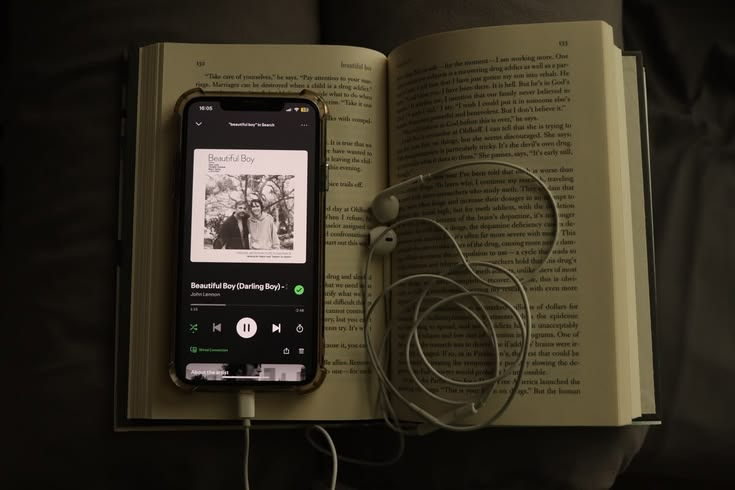

MY WORK & CREATIONS
Featured Projects
Here are some of my personal projects, creative ideas, and school activities. Each project represents my interests, memories, and creativity.

My Favorite Drinks
A collection of my favorite drinks, featuring matcha as one of my favorite refreshing and creamy treats.
Drinks & Recipes
My Music
A collection of songs that match my mood, express my feelings, and accompany my everyday life.
Music & Playlists
My Dream
Places I dream of visiting someday, including Japan, Switzerland, South Korea, Manhattan, and Paris.
Travel & Dreams

My Favorites
My favorite movies and anime, featuring the characters, stories, and worlds I enjoy.
Movies & Anime
Teacher's Month
A collection of school memories and appreciation for our teachers, including Ma'am Mari Laynesa.
Memories & Appreciation